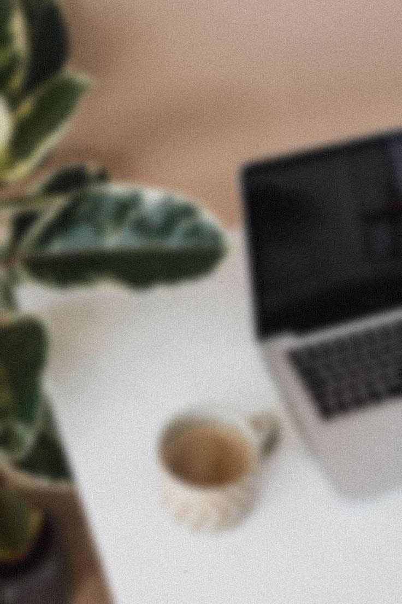
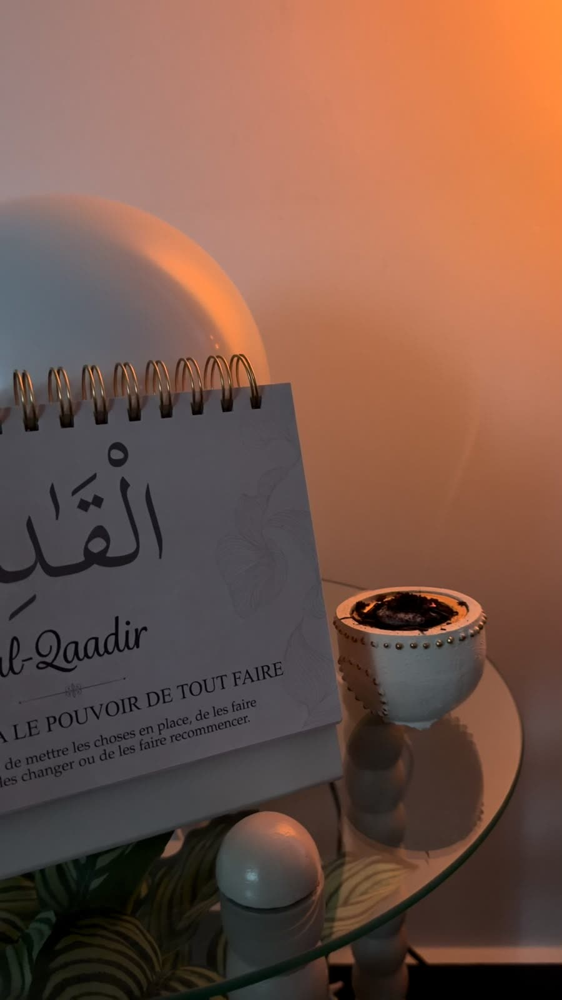

Et si prendre soin de toi
commençait ici ?
Ashifaa est un espace de bien-être féminin, pensé pour prendre soin de toi au quotidien : ton hygiène de vie, ton alimentation, tes émotions et ton équilibre intérieur, dans une approche inspirée par la foi et la médecine prophétique.
Une approche qui regarde tout ensemble
Mon accompagnement prend en compte plusieurs dimensions de ta vie — tes habitudes quotidiennes, ton alimentation, ton sommeil, ton rapport au stress et aux émotions, ton activité physique, ton rythme de vie et ta spiritualité. Je ne les sépare pas : c'est en les regardant ensemble que l'accompagnement prend tout son sens.
Un suivi pensé pour toi
Première consultation
Un premier échange pour poser les bases.
Consultation de suivi
Faire le point et ajuster les recommandations.
Programme alimentaire & hygiène de vie
Un document personnalisé, sans suivi régulier.
Accompagnement 3 mois
Un suivi régulier, semaine après semaine.
Accompagnement 6 mois
Un accompagnement dans la durée.
La bibliothèque Ashifaa
Des e-books autour du bien-être féminin, de l'alimentation et de la médecine prophétique.
T'accompagner, pas te faire entrer dans une case
Un accompagnement qui part de toi
Pas de programme tout fait. Je prends le temps de comprendre ton histoire, ton quotidien, tes besoins et ce que tu traverses pour construire un accompagnement qui te ressemble.
De l'écoute avant tout
Un espace où tu peux déposer ce que tu ressens, poser tes questions et parler librement, sans jugement.
Une approche globale et cohérente
Hygiène de vie, alimentation, émotions, habitudes du quotidien et médecine prophétique peuvent trouver leur place dans ton accompagnement, selon tes besoins.
La médecine prophétique, avec respect
Elle fait partie de l'univers Ashifaa et est abordée avec sérieux, dans le respect de ses fondements et de tes besoins. Elle ne remplace jamais un diagnostic, un traitement ou un suivi médical.
Retrouve Ashifaa sur Instagram pour découvrir mes conseils, mes réflexions et les coulisses de l'univers Ashifaa.
@ashifaa.bienetreParfois, prendre soin de soi commence simplement par s'accorder un peu de temps.
Pourquoi Ashifaa ?

Ashifaa est née d'une envie simple : offrir aux femmes un espace où elles peuvent être écoutées, sans jugement, et accompagnées avec douceur dans leur bien-être.
Je crois qu'il est important de prendre en compte la personne dans son ensemble : son corps, son quotidien, ses émotions, ses habitudes et ce qu'elle vit intérieurement. C'est cette vision qui se retrouve dans chacun de mes accompagnements.
La douceur est au cœur de ma façon de travailler. Je n'impose rien : j'écoute, je propose des pistes adaptées à ta situation, et nous avançons ensemble, une étape après l'autre.
La foi fait naturellement partie de l'univers Ashifaa. Elle se retrouve notamment dans la place que j'accorde à la médecine prophétique, abordée avec respect, sérieux et discernement.
La médecine prophétique chez Ashifaa
La médecine prophétique fait partie de l'identité d'Ashifaa et de ma manière d'aborder le bien-être. Elle peut trouver sa place dans le quotidien à travers certaines habitudes, certains aliments et des pratiques issues de la tradition prophétique, toujours avec respect et sans promesse de guérison. Elle s'intègre dans une approche globale du bien-être et ne remplace jamais un diagnostic, un traitement ou un suivi médical.
Un suivi pensé pour toi

Tous les accompagnements se déroulent à distance, à ton rythme.
Première consultation
1h à 1h30Cette première consultation permet de prendre le temps de comprendre ta situation, tes habitudes et tes objectifs.
- Questionnaire préalable
- Échange approfondi autour de ton quotidien et de tes habitudes
- Bilan global
- Identification des principaux axes à travailler
- Recommandations personnalisées
- Premières actions concrètes à mettre en place
- Mise en place d'un petit programme de départ adapté à tes besoins
Consultation de suivi
45 min environUne consultation ponctuelle pour faire le point sur ton évolution et ajuster les recommandations.
- Retour sur les changements mis en place
- Échange sur les difficultés et les besoins rencontrés
- Réponses à tes questions
- Ajustement des recommandations
- Nouvelles pistes adaptées à ton évolution
Peut être prise selon tes besoins, quelques semaines ou plusieurs mois après la première consultation.
Programme alimentaire & hygiène de vie
Document personnaliséUn programme personnalisé élaboré à partir d'un questionnaire préalable et d'un échange avec toi.
- Recommandations alimentaires
- Idées de repas et de collations
- Conseils concernant l'hydratation
- Propositions d'activité physique adaptées
- Conseils autour des habitudes de vie
- Recommandations générales d'hygiène de vie
Transmis sous forme d'un document personnalisé. Cette prestation ne comprend pas de suivi régulier.
Accompagnement
3 moisUn accompagnement personnalisé et évolutif, avec un suivi régulier et une adaptation progressive des recommandations.
- Première consultation approfondie, questionnaire et programme de départ
- Point hebdomadaire sur ton évolution et tes habitudes
- Un appel de suivi chaque mois, pour faire le point plus en profondeur
- Échanges WhatsApp entre les rendez-vous
L'objectif : ne pas te laisser seule avec un programme, mais l'adapter progressivement à ton quotidien.
Accompagnement
6 moisUn accompagnement plus long, pour installer progressivement de nouvelles habitudes et observer leur évolution dans la durée.
- Première consultation approfondie, questionnaire et programme de départ
- Point hebdomadaire sur ton évolution et tes habitudes
- Un appel de suivi chaque mois, avec bilan de l'évolution
- Échanges WhatsApp entre les rendez-vous
Le programme évolue selon tes besoins, tes difficultés et ce que tu arrives réellement à mettre en place.
Les prestations proposées par Ashifaa s'inscrivent dans une démarche de bien-être et d'hygiène de vie. Elles ne remplacent pas un diagnostic, un traitement ou un suivi médical. En cas de problème de santé, elles viennent en complément d'un accompagnement par les professionnels de santé concernés. Chaque accompagnement est adapté à la personne et à ses besoins.
La bibliothèque Ashifaa
Conseils, réflexions et inspirations pour prendre soin de soi au quotidien
Bien dormir, c'est aussi prendre soin de soi
Le sommeil est souvent la première chose qu'on sacrifie quand les journées se remplissent. Pourtant, bien dormir change beaucoup de choses : l'énergie, l'humeur, la capacité à gérer le stress. Diminuer les écrans avant de dormir, garder des horaires réguliers, et t'accorder un vrai moment de calme avant de te coucher — rien de spectaculaire, juste des gestes simples, répétés avec régularité.
Quand le stress s'installe : 5 petites choses à faire
Quand le stress prend de la place, il n'est pas toujours possible de tout changer d'un coup. Voici cinq petites choses à essayer : respirer profondément quelques minutes, marcher un peu, écrire ce qui pèse sur toi, réduire les sollicitations autour de toi, et t'accorder un moment de calme, même court. De petits gestes, mais qui peuvent faire une vraie différence.
Les graines dans l'alimentation : comment les intégrer facilement ?
Lin, courge, tournesol, sésame, chia... les graines sont faciles à ajouter à l'alimentation, sans rien bouleverser. Tu peux les parsemer sur un yaourt, une salade ou un porridge, les ajouter à une pâte à pain ou à un smoothie. Elles apportent de la texture et se glissent facilement dans des repas simples.

Une assiette simple pour prendre soin de son énergie
Pas besoin de règles compliquées pour composer une assiette qui te fait du bien : des légumes, une source de protéines, des féculents complets et un peu de matière grasse de qualité suffisent souvent. L'idée n'est pas de suivre un modèle parfait, mais de trouver une base simple que tu peux réellement reproduire, jour après jour.
Quand les émotions prennent beaucoup de place
Il y a des jours où les émotions débordent, sans qu'on sache toujours pourquoi. Plutôt que de les repousser, tu peux essayer de les accueillir : nommer ce que tu ressens, t'accorder le droit de le ressentir, sans te juger. Le calme revient rarement d'un coup — il se retrouve doucement, un peu à la fois.
5 habitudes simples pour prendre davantage soin de soi
Boire suffisamment d'eau, bouger un peu chaque jour, manger à des horaires réguliers, dormir suffisamment, et t'accorder de vraies pauses : des habitudes simples, mais faciles à négliger. Pas besoin de toutes les mettre en place en même temps — choisir une seule habitude et la tenir dans la durée est déjà un vrai pas.

Le miel dans la tradition prophétique
Le miel occupe une place particulière dans la tradition prophétique, où il est mentionné pour ses bienfaits. Sur le plan nutritionnel, il contient aussi des antioxydants et des sucres naturels. Cette double dimension, traditionnelle et nutritionnelle, mérite d'être distinguée clairement : un bel ajout à l'alimentation, sans pour autant remplacer un traitement médical.
Les dattes : un aliment présent dans la tradition musulmane
Les dattes occupent une place importante dans la tradition musulmane, notamment pendant le Ramadan. Elles sont aussi une bonne source d'énergie, de fibres et de minéraux. Faciles à emporter, elles peuvent accompagner une collation, un petit-déjeuner ou simplement un moment de pause dans la journée.

Et si prendre soin de soi commençait par ralentir ?
On associe souvent le bien-être à l'action : faire plus, mieux, plus vite. Mais parfois, prendre soin de soi commence simplement par ralentir — accepter de ne pas être productive à chaque instant, et laisser une vraie place au repos. Ce n'est pas de la paresse : c'est une façon de se respecter.
Le corps nous parle aussi
Fatigue, faim, tensions, sommeil qui se dérègle : le corps envoie souvent des signaux avant que quelque chose ne devienne difficile à porter. Apprendre à les observer, sans chercher à s'auto-diagnostiquer, est une première étape. Si un signal persiste ou t'inquiète, il reste toujours important d'en parler à un professionnel de santé.
De tout petits conseils, au fil des jours
Aujourd'hui, prends 10 minutes pour marcher sans téléphone. Pas pour être productive. Pas pour atteindre un objectif. Juste pour bouger, respirer et laisser ton esprit souffler.
Avant de vouloir changer toute ta routine, commence par une seule habitude. Une petite chose que tu peux réellement tenir dans ton quotidien vaut mieux qu'une routine parfaite abandonnée après quelques jours.
Les contenus du Journal Ashifaa sont proposés à titre informatif et ne remplacent ni un avis, ni un diagnostic, ni un suivi médical.
Réservons un moment pour toi
Choisis ton accompagnement
La prestation qui correspond à ton besoin.
Choisis un créneau
Le moment qui te convient le mieux.
Confirme ta réservation
Réception d'une confirmation et des modalités de paiement.
Créneaux donnés à titre indicatif — la disponibilité définitive te sera confirmée par email.
Une question avant de réserver ?
Cette page sert à me poser une question avant de réserver. Pour prendre directement rendez-vous, c'est par ici :
